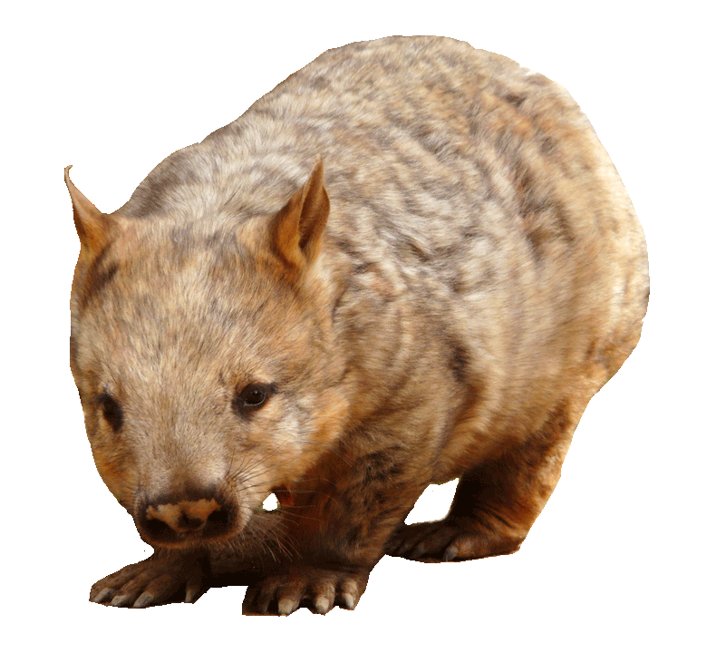

Southern
Hairy-Nosed
Wombat
Lasiorhinus Latifrons

DESCRIPTION
The southern hairy-nosed wombat (Lasiorhinus latifrons) is one of three extant species of wombats. It is found in scattered areas of semiarid scrub and mallee from the eastern Nullarbor Plain to the New South Wales border area. It is the smallest of all three wombat species. The young often do not survive dry seasons. It is the state animal of South Australia.
Among the oldest southern hairy-nosed wombats ever documented were a male and a female from Brookfield Zoo just outside Chicago. Their names were Carver, which lived to be 34, and his mother, Vicky, which lived to be 24. In South Australia in 2010, a domesticated wombat named Wally was also reported as having reached the age of 34. The oldest currently living captive southern hairy nosed wombat is Hamlet at the Toronto Zoo at age 33.
BEHAVIOR
Southern hairy-nosed wombats, along with other wombat species, select native perennial grasses and sedges, but do consume introduced pasture species, forbs, and the leaves of woody shrubs if their favoured food is not available. Much of the southern hairy-nosed wombat's diet is Stipa nitida, which grows around its warren complex and is trimmed as it grazes. This creates an area with a higher density of new green shoots, a sign of delayed growth of individual grass. The teeth of the wombat are more effective in grinding food into small particles than the western grey kangaroo. Its digestive tract has a tiny caecum and a colon divided into parts. The anterior part is relatively small and serves as the site for fermentation, while the posterior part is larger and is where water is reabsorbed. The wombat conserves water by recycling more urea to the colon rather than releasing it as urine. Wombats release less than other herbivorous mammals. As such, the southern hairy-nosed wombat produces very dry feces, with water contents as low as 40%.
Southern hairy-nosed wombats range though Western Australia, southern South Australia, and south-western New South Wales. They live in semiarid to arid grasslands and woodlands. Southern hairy-nosed wombats dig and live in burrows which they connect into warrens with many entrances. These warrens are their prime refuges and are shared by up to 10 individuals. A wombat digs with its fore claws while sitting up. It leaves its new burrow backwards and pushes out soil with all its paws. The central warren is surrounded by a circle of small, simple burrows 100–15 m from it. The small burrows along the outer edges is where young wombats go when they are displaced from the central warren. Wombats may favour a certain burrow and not share it with others. However, there is no monopolization of burrows.